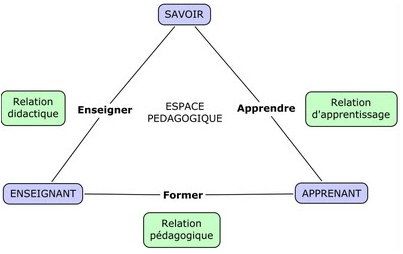

Liens
Train the Trainer - Didactique
Didactique : 26 cours, ressources et méthodes pour créer du matériel de formation en ligne
Cours en ligne gratuit de formation à la didactique des langues-cultures...
Uni à distance
UniDistance.ch